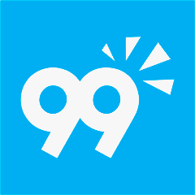

Ryan Soares
Desenvolvedor Fullstack
"Sistemas de ponta a ponta — do papel ao produto final."
Sobre Mim
Vim de dois anos no chão de fábrica antes de entrar em tech. Lá aprendi algo que poucos devs têm: que organização não é detalhe, é o que define se um processo funciona ou trava. Isso mudou como eu escrevo código, estruturo projetos e entrego o que foi combinado.
Hoje desenvolvo aplicações mobile e web de ponta a ponta — comecei pelos backoffices web e fui até apps que se comunicam entre si em produção. Em pouco mais de um ano na Teamsoft saí do zero a ser uma das referências internas quando o assunto é desenvolvimento.
- Vim da indústria (contexto de qualidade e processos)
- Organização como valor central
- Fascinado por desafio
- Comunico em linguagem simples, sem "tecniquês"
Serviços
Você tem uma ideia de aplicativo mas não sabe por onde começar — ou já tentou antes e o dev sumiu no meio do projeto?
Trabalho com FlutterFlow e Flutter para criar apps Android e iOS do zero, com backend em Supabase (banco de dados, autenticação, funcionalidades em tempo real).
Já entreguei projetos reais: um ecossistema de mobilidade urbana com rastreamento ao vivo e pagamento integrado via Stripe, e um sistema ERP com controle de estoque e financeiro.
- Comunicação ativa durante todo o projeto — você não fica no escuro
- Prazo combinado é prazo cumprido
- Explico cada etapa em linguagem simples
- Disponível para ajustes após a entrega
+1 ano de experiência com desenvolvimento mobile em projetos reais de alta complexidade, utilizando FlutterFlow, Flutter e Supabase.
Manda uma mensagem descrevendo seu projeto. Respondo rápido.Skills & Tecnologias
Uso no dia a dia
- Flutter
- Dart
- Supabase
- PostgreSQL
- Figma
- API REST
Sei usar
- JavaScript
- Node.js
- Next.js
- NestJS
- React
- HTML
- CSS
Aprendendo ativamente
- Node.js
- Next.js
- NestJS
- React
Experiência
Teamsoft
Desenvolvedor Mobile (Estagiário)
- Desenvolvimento de apps multiplataforma com Flutter/Dart, arquitetura BLoC
- Tradução fiel de protótipos Figma em código Flutter
- Modelagem de banco de dados relacional, migrations em produção (tabelas, relacionamentos, índices, constraints, funções SQL)
- Jobs agendados, triggers e automações via pg_cron
- Integração com Supabase (autenticação, RLS, Edge Functions) e Firebase
- Implementação de pagamentos com Stripe (criação de clientes, métodos de pagamento, tratamento de erros)
- Publicação e gerenciamento de releases na Google Play Store
- Ciclo completo: Git, Docker, Azure DevOps (CI/CD, branches, pull requests)
- Diagnóstico e correção de bugs em produção (falhas de RLS, inconsistências de migração)
Rodenstock — Auxiliar de Produção
Fev 2025 – Ago 2025 (7 meses)
Atuou no setor de Controle de Qualidade inspecionando lentes. Integrou o programa AGILA, criando e ajustando planilhas específicas para setores de produção.
Rodenstock — Auxiliar de Escritório (Aprendiz)
Fev 2024 – Fev 2025 (1 ano)
Elaboração e ajuste de relatórios diários com Excel (PROCV, SOMA, MÉDIA), organização dos setores de produção, uso de CRM para gestão de pedidos de clientes.
Projetos
Em breve
Esta seção será populada com projetos reais após a conclusão do portfólio.
Projetos em desenvolvimento para inclusão futura:
- Loja na Mão (Flutter + Supabase)
- Agenda Fácil (Flutter + Supabase)
- Mini ERP (Flutter + Supabase)
Contato
Email: ryansoareshub@gmail.com
GitHub: github.com/RyanSDeve
LinkedIn: linkedin.com/in/ryan-soares-17488b351
99Freelas: 